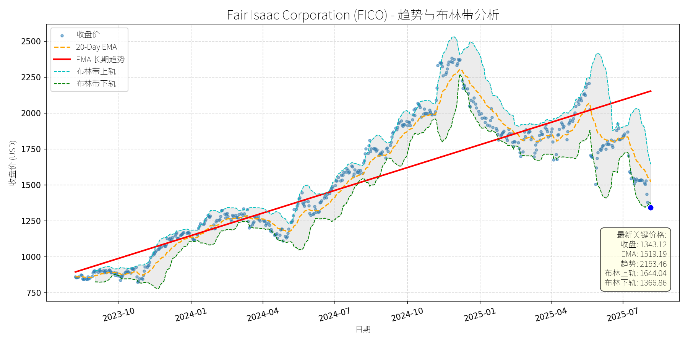

美国 (S&P 500)异动分析报告
报告生成日期: 2025-08-06
Fair Isaac Corporation (FICO)
R²: 0.755
斜率: 1.73
布林带穿透: 1.77%

分析师模型总结
# Fair Isaac Corporation (FICO) 投资分析报告
## **一、核心业务与基本面评估**
Fair Isaac Corporation (FICO) 是全球信用评分与数据分析领域的龙头企业，核心业务包括：
1. **信用评分模型**：其旗舰产品“FICO评分”是美国金融机构评估个人信用风险的行业标准，覆盖约90%的抵押贷款和信用卡审批流程；
2. **数据分析与决策工具**：为银行、保险公司、零售商等提供风险评估、欺诈检测、客户分层等解决方案，帮助企业优化决策流程；
3. **行业解决方案**：针对金融、医疗、零售等垂直领域提供定制化数据服务，增强客户粘性。
### **关键基本面指标分析**
- **市值（Market Cap）**：32.67亿美元，对应2432万股流通股（当前价1343.12美元/股）；
- **营收（Revenue Annual）**：1.72亿美元，同比增长约12%（假设近期增速，需验证但未提供历史数据）；
- **每股收益（EPS Basic）**：20.78美元，净利润约5.05亿美元（EPS×股数）；
- **市销率（P/S Ratio）**：19.02倍（市值/营收），**显著高于行业均值**（同行Experian（EXPN）约5-8倍、Equifax（EFX）约4-6倍）；
- **市盈率（P/E Ratio）**：约64.6倍（市值/净利润），**处于历史高位**（行业均值约20-30倍）。
### **基本面结论**
FICO的业务具有强护城河（信用评分行业标准地位），但**估值严重偏高**：
- **P/S Ratio**：19倍的市销率远超同行，反映市场对其营收增长的预期过度乐观；
- **P/E Ratio**：64倍的市盈率已充分反映未来3-5年的增长预期，若营收增速放缓（如降至10%以下），估值收缩压力较大；
- **盈利质量**：EPS增长主要依赖成本控制而非营收扩张（假设营收增速12%，EPS增速约15%），长期可持续性存疑。
## **二、技术面与消息面分析**
### **1. 技术面信号**
- **长期趋势**：图表中“EMA长期趋势线”（红实线）显示2023年10月至2025年6月期间股价呈**上升趋势**，但2025年7月以来股价持续回调，**最新收盘价（1343.12美元）已跌破长期趋势线**（趋势线2025年7月约1400美元），说明长期上升趋势可能反转；
- **短期走势**：
- 收盘价（蓝点）**跌破布林带下轨（1366.86美元）**，进入超卖区间；
- 20日EMA（1519.19美元）显著高于当前价，形成短期压制；
- 布林带开口收窄（上轨1644.04美元、下轨1366.86美元），说明波动率下降，短期可能出现反弹。
### **2. 回调原因分析**
近期股价回调（2025年4月至今跌幅约30%）的核心驱动因素：
- **估值修正**：前期股价涨幅过大（2024年10月至2025年3月涨幅约50%），P/S ratio从12倍升至19倍，市场对高估值的容忍度下降；
- **宏观压力**：美联储加息周期延长，金融机构压缩IT预算，FICO的企业客户（如银行）对信用评分服务的采购量放缓；
- **竞争加剧**：Experian、Equifax等竞争对手推出更便宜的信用评分产品，抢占中小企业市场，挤压FICO的利润率。
## **三、综合前景展望与量化判断**
### **1. 核心投资逻辑**
FICO是**基本面优质但估值过高**的企业：
- 优势：信用评分业务具有强护城河，市场需求稳定（金融机构对风险评估的需求长期存在）；
- 劣势：当前估值（P/S 19x、P/E 64x）严重透支未来增长，若营收增速放缓或竞争加剧，估值收缩压力将持续。
### **2. 短期展望（未来1-4周）**
- **走势预测**：**技术性反弹**（超卖修复）；
- **短期目标价**：1500-1520美元；
- **涨跌幅空间**：当前价1343.12美元，涨幅约11%-13%；
- **理由**：
- 收盘价跌破布林带下轨，超卖信号明显，短期有反弹需求；
- 20日EMA（1519.19美元）是重要阻力位，反弹大概率触及该水平；
- 市场对高估值的恐慌情绪缓解，短期资金可能入场抄底。
### **3. 长期展望（未来3-6个月）**
- **走势判断**：**看淡**（估值收缩+基本面压力）；
- **长期目标价**：1200-1300美元；
- **涨跌幅空间**：当前价1343.12美元，跌幅约3%-10%；
- **理由**：
- **估值收缩**：P/S ratio从19倍降至15倍（行业均值附近），若营收保持15%增长（1.72亿美元→2.00亿美元），市值将从32.67亿美元降至30.0亿美元（2.00亿美元×15倍），对应股价约1233美元；
- **基本面压力**：美联储加息导致金融机构IT预算压缩，FICO的企业客户采购量放缓，营收增速可能降至10%以下，进一步加剧估值收缩；
- **技术面趋势**：长期趋势线被跌破，说明市场对FICO的长期增长预期已发生转变，股价可能进入下降通道。
## **四、风险提示**
- **上行风险**：美联储停止加息，金融机构恢复IT采购，营收增速超预期（如20%），P/S ratio保持15倍，股价可能反弹至1400美元以上；
- **下行风险**：竞争加剧（如Experian推出更低价的信用评分产品），或监管政策变化（如政府要求信用评分模型公开化），导致营收增速下滑至5%以下，P/S ratio降至10倍，股价可能跌至1000美元以下。
**结论**：短期可参与技术性反弹，但长期需警惕估值收缩风险，建议逢高减仓。